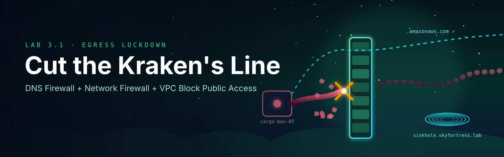
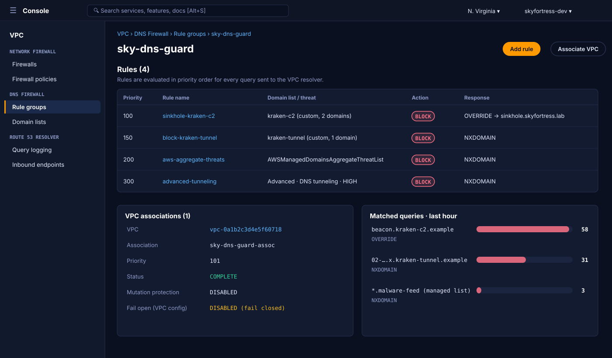
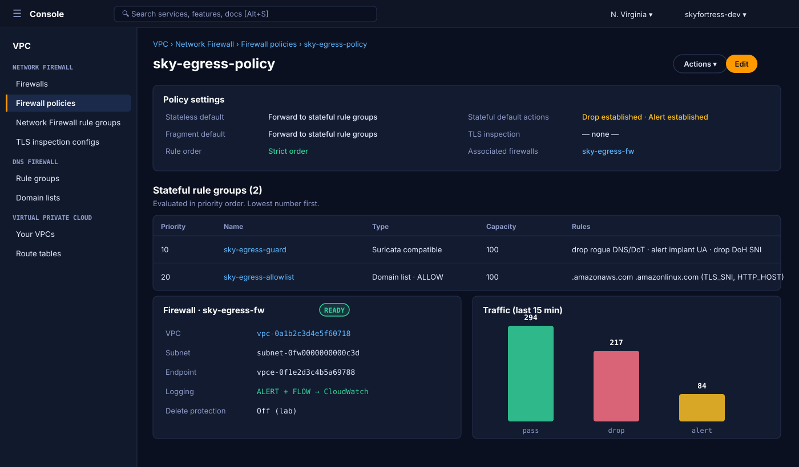

Cut the Kraken's Line
Goal: An implant on nimbus-cargo-box-07 uses four channels: C2 lookups through the VPC resolver, lookups through a rogue resolver (8.8.8.8), HTTP and HTTPS. Cut all four without cutting the business traffic the box legitimately needs (AWS APIs, OS package repos). When the implant reports every channel severed, it gives you the flag.
The lab's NAT gateway (≈ $0.045 per hour) starts billing at step 1, and the Network Firewall endpoint (≈ $0.395 per hour) at step 8. Both bill from the moment they exist until you delete them, whether or not traffic flows. Keep the VPC for the boss fight, then run the cleanup block at 17:15. labs/setup/nuke-check.sh lists anything you forgot.
Follow the 13 steps below. Every command is given, and each step ends with what you should see.
Time: about 75 min. Stuck for 15 minutes? Open the hint. Stuck for 25? lab31-solution.sh does steps 4–10, and reading it counts as learning.
Goal: the implant prints "All channels severed" and AWS APIs … REACHABLE.
Constraints: don't touch the instance or its security group. Use only DNS Firewall, Network Firewall and route tables. Allow-list only .amazonaws.com and .amazonlinux.com.
Acceptance: named alerts for sid 3100001 and 3100010 appear in /skyfortress/nfw/alert, and VPC BPA is in block-ingress.
Prerequisites
- Lab 0 complete (CloudShell, repo cloned, budget alarm). An admin role in
skyfortress-dev. - Files: lab31-egress-vpc.yaml, lab31-egress-guard.rules (break-glass: lab31-solution.sh)
Steps
- Deploy the vulnerable VPC
The stack builds a public subnet with the NAT gateway, an empty firewall subnet, and a private subnet with the infected box. Right now the private route table sends
0.0.0.0/0straight to NAT.cd ~/skyfortress/labs/day3 export AWS_REGION=us-east-1 aws cloudformation deploy --stack-name sky-lab31 --template-file lab31-egress-vpc.yaml \ --capabilities CAPABILITY_NAMED_IAM # Load every stack output into an env var (VpcId -> $VpcId, etc.) eval $(aws cloudformation describe-stacks --stack-name sky-lab31 \ --query 'Stacks[0].Outputs[].[OutputKey,OutputValue]' --output text | awk '{print "export "$1"="$2}') echo "VPC=$VpcId box=$InstanceId privRT=$PrivateRouteTableId" - Meet the implant
Define a helper that runs a command on the box through SSM (no SSH, no inbound ports; that's Module 3.3 in practice), then ask the implant for its status.
kx() { # run a shell command on the cargo box via SSM and print the output local id; id=$(aws ssm send-command --instance-ids "$InstanceId" --document-name AWS-RunShellScript \ --parameters "commands=[\"$1\"]" --query Command.CommandId --output text) aws ssm wait command-executed --command-id "$id" --instance-id "$InstanceId" 2>/dev/null aws ssm get-command-invocation --command-id "$id" --instance-id "$InstanceId" \ --query StandardOutputContent --output text } kx "sudo /opt/kraken/implant.sh status"$ kx "sudo /opt/kraken/implant.sh status" KRAKEN IMPLANT STATUS --------------------- C2 via VPC resolver ........ OPEN C2 via rogue resolver 8.8.8.8 OPEN HTTP exfil (example.com) ... OPEN HTTPS exfil (example.com) .. OPEN AWS APIs (business traffic) REACHABLE Kraken: hehehe. I can still hear the mothership.
The baseline. Four open channels, plus the business traffic you must keep alive.
Of the four channels, which do you expect DNS Firewall alone to close? Write your answer down before step 6.
Reveal
Only C2 via VPC resolver. The rogue-resolver channel asks 8.8.8.8 directly and never touches the VPC resolver. The HTTP(S) channels connect to an IP and need no lookup from your resolver at all. DNS Firewall only filters what passes through Route 53 Resolver.
- Turn on the lights: Resolver query logging
You can't defend what you can't see. Send every DNS query in the VPC to CloudWatch Logs. The boss fight depends on this data, so don't skip it.
QLC=$(aws route53resolver create-resolver-query-log-config --name sky-qlog \ --destination-arn "${DnsQueryLogGroupArn%:*}" --creator-request-id "q-$(date +%s)" \ --query ResolverQueryLogConfig.Id --output text) aws route53resolver associate-resolver-query-log-config --resolver-query-log-config-id "$QLC" --resource-id "$VpcId"Wait two minutes, then open CloudWatch → Logs Insights on
/skyfortress/dns/query:fields @timestamp, query_name, query_type, rcode, srcaddr | sort @timestamp desc | limit 50You'll see
beacon.kraken-c2.exampleevery minute. You may also notice some other odd-looking names. Note them for later. 👀Logs Insights returns rows within 2–3 minutes, including
beacon.kraken-c2.examplewithrcode NOERROR. - DNS Firewall: sinkhole the C2 domain
Create a domain list and a rule group, then add a
BLOCK→OVERRIDErule that answers with the sinkhole record in the lab's private zone. A sinkhole is better than NXDOMAIN for hunting, because every hit becomes a connection attempt to an IP you control.DL=$(aws route53resolver create-firewall-domain-list --name kraken-c2 \ --creator-request-id "dl-$(date +%s)" --query FirewallDomainList.Id --output text) aws route53resolver update-firewall-domains --firewall-domain-list-id "$DL" --operation ADD \ --domains 'kraken-c2.example' '*.kraken-c2.example' RG=$(aws route53resolver create-firewall-rule-group --name sky-dns-guard \ --creator-request-id "rg-$(date +%s)" --query FirewallRuleGroup.Id --output text) aws route53resolver create-firewall-rule --name sinkhole-kraken-c2 --creator-request-id "r1-$(date +%s)" \ --firewall-rule-group-id "$RG" --firewall-domain-list-id "$DL" --priority 100 \ --action BLOCK --block-response OVERRIDE \ --block-override-domain sinkhole.skyfortress.lab --block-override-dns-type CNAME --block-override-ttl 60 echo "list=$DL group=$RG"Both IDs print (
rslvr-fdl-…andrslvr-frg-…). The rule exists but does nothing yet, because the group isn't associated with any VPC. - Add AWS threat intel and attach the group to the VPC
# AWS-managed threat intel (curated, updated by AWS) aws route53resolver list-firewall-domain-lists \ --query "FirewallDomainLists[?ManagedOwnerName=='Route 53 Resolver DNS Firewall'].[Name,Id]" --output table MAL=$(aws route53resolver list-firewall-domain-lists \ --query "FirewallDomainLists[?Name=='AWSManagedDomainsAggregateThreatList'].Id" --output text) aws route53resolver create-firewall-rule --name aws-aggregate-threats --creator-request-id "r2-$(date +%s)" \ --firewall-rule-group-id "$RG" --firewall-domain-list-id "$MAL" --priority 200 \ --action BLOCK --block-response NXDOMAIN aws route53resolver associate-firewall-rule-group --name sky-dns-guard-assoc \ --creator-request-id "a-$(date +%s)" --firewall-rule-group-id "$RG" --vpc-id "$VpcId" --priority 101
SCREEN 3.1a Where you'll be by the end of the boss fight: four rules and one association. Right now you have priorities 100 and 200. Illustrative mock-up; the live console layout may differ. list-firewall-rule-group-associationsshowsStatus: COMPLETEforsky-dns-guard-assoc. It takes about 30–60 seconds. - Verify, and get humbled
kx "dig +short beacon.kraken-c2.example; echo ---; sudo /opt/kraken/implant.sh status"sinkhole.skyfortress.lab. 10.66.255.254 --- KRAKEN IMPLANT STATUS --------------------- C2 via VPC resolver ........ SEVERED C2 via rogue resolver 8.8.8.8 OPEN HTTP exfil (example.com) ... OPEN HTTPS exfil (example.com) .. OPEN AWS APIs (business traffic) REACHABLE Kraken: hehehe. I can still hear the mothership.
One down, three to go. The sinkhole answer is the CNAME you configured.
The resolver now answers
sinkhole.skyfortress.lab.→10.66.255.254, so one channel is closed. The other three are still OPEN, becausedig @8.8.8.8never asks the VPC resolver, and HTTP(S) to a raw IP needs no DNS at all. DNS Firewall can only filter queries that go through it. - Build the Network Firewall rule groups
There are two stateful groups, both
STRICT_ORDER. Priority 10 is your custom Suricata guard: drop rogue DNS and DoT, alert on the implant's user-agent, drop known DoH SNIs. Read the rules file before loading it. Priority 20 is the domain allow-list: only.amazonaws.comand.amazonlinux.com, matched on TLS SNI and HTTP Host.jq -Rs '{RulesSource:{RulesString:.},StatefulRuleOptions:{RuleOrder:"STRICT_ORDER"}}' \ lab31-egress-guard.rules > /tmp/guard.json GUARD=$(aws network-firewall create-rule-group --rule-group-name sky-egress-guard --type STATEFUL \ --capacity 100 --rule-group file:///tmp/guard.json --query RuleGroupResponse.RuleGroupArn --output text) ALLOW=$(aws network-firewall create-rule-group --rule-group-name sky-egress-allowlist --type STATEFUL \ --capacity 100 --query RuleGroupResponse.RuleGroupArn --output text --rule-group '{ "RulesSource": {"RulesSourceList": { "Targets": [".amazonaws.com", ".amazonlinux.com"], "TargetTypes": ["TLS_SNI", "HTTP_HOST"], "GeneratedRulesType": "ALLOWLIST"}}, "StatefulRuleOptions": {"RuleOrder": "STRICT_ORDER"}}')Gotcha: the leading dot.amazonaws.commatchesssm.us-east-1.amazonaws.comandamazonaws.com. Without the dot it matches only that exact name. And remember who the "business traffic" includes: SSM, the CloudWatch agent, package repos, and the SDKs your app calls. Leave any of them off the list and you've caused your own outage. - Create the policy and the firewall
The default actions are the key decision:
aws:drop_established+aws:alert_established. Creating the firewall takes 3–6 minutes, so read the TLS inspection section of Module 3.1 again while you wait.POL=$(aws network-firewall create-firewall-policy --firewall-policy-name sky-egress-policy \ --query FirewallPolicyResponse.FirewallPolicyArn --output text --firewall-policy "{ \"StatelessDefaultActions\": [\"aws:forward_to_sfe\"], \"StatelessFragmentDefaultActions\": [\"aws:forward_to_sfe\"], \"StatefulEngineOptions\": {\"RuleOrder\": \"STRICT_ORDER\"}, \"StatefulDefaultActions\": [\"aws:drop_established\", \"aws:alert_established\"], \"StatefulRuleGroupReferences\": [ {\"ResourceArn\": \"$GUARD\", \"Priority\": 10}, {\"ResourceArn\": \"$ALLOW\", \"Priority\": 20}]}") aws network-firewall create-firewall --firewall-name sky-egress-fw --firewall-policy-arn "$POL" \ --vpc-id "$VpcId" --subnet-mappings SubnetId="$FirewallSubnetId" until [ "$(aws network-firewall describe-firewall --firewall-name sky-egress-fw \ --query FirewallStatus.Status --output text)" = READY ]; do sleep 20; printf '.'; done; echo READY EP=$(aws network-firewall describe-firewall --firewall-name sky-egress-fw \ --query 'FirewallStatus.SyncStates.*.Attachment.EndpointId' --output text); echo "$EP"
SCREEN 3.1b Check three things here: Strict order, the two default actions, and the priority of each group. Illustrative mock-up; the live console layout may differ. After 3–6 minutes of dots the loop prints
READY, then a single endpoint ID such asvpce-0f1e2d3c4b5a69788. - Turn on firewall logging
aws network-firewall update-logging-configuration --firewall-name sky-egress-fw --logging-configuration \ '{"LogDestinationConfigs":[{"LogType":"ALERT","LogDestinationType":"CloudWatchLogs","LogDestination":{"logGroup":"/skyfortress/nfw/alert"}}]}' # Logging destinations are added one at a time - describe, then add FLOW as a second call: aws network-firewall update-logging-configuration --firewall-name sky-egress-fw --logging-configuration \ '{"LogDestinationConfigs":[ {"LogType":"ALERT","LogDestinationType":"CloudWatchLogs","LogDestination":{"logGroup":"/skyfortress/nfw/alert"}}, {"LogType":"FLOW","LogDestinationType":"CloudWatchLogs","LogDestination":{"logGroup":"/skyfortress/nfw/flow"}}]}' - Re-route: put the firewall in the path, both directions
If you change only the private route table, what happens to
https://ssm.us-east-1.amazonaws.com? Try it with only the first command, runstatus, and then add the second.Reveal
It breaks.
AWS APIsflips toDOWN, and you lose the SSM session you use to runkxuntil the second route goes in. The replies take the asymmetric path NAT → instance, so the stateful engine never sees an established flow anddrop_establishedhas nothing to pass. Ifkxhangs, add the return route from CloudShell. It doesn't need the instance.# Outbound: private subnet -> firewall endpoint (instead of NAT) aws ec2 replace-route --route-table-id "$PrivateRouteTableId" \ --destination-cidr-block 0.0.0.0/0 --vpc-endpoint-id "$EP" # Return: NAT's subnet must send replies for the private CIDR back THROUGH the firewall aws ec2 create-route --route-table-id "$PublicRouteTableId" \ --destination-cidr-block 10.66.2.0/24 --vpc-endpoint-id "$EP"Hint: what the one-route version looks like
With only the outbound route, packets go box → firewall → NAT → internet, but the replies go NAT → box directly. The stateful engine never sees the SYN-ACK, so the flow never counts as established, and your allow-list never gets a chance to pass it. TLS hangs,
aws=DOWN, and Owlsley tells you that you cut the power, not the line. - Moment of truth
kx "sudo /opt/kraken/implant.sh status"KRAKEN IMPLANT STATUS --------------------- C2 via VPC resolver ........ SEVERED C2 via rogue resolver 8.8.8.8 SEVERED HTTP exfil (example.com) ... SEVERED HTTPS exfil (example.com) .. SEVERED AWS APIs (business traffic) REACHABLE Kraken: ...the line is cut. All channels severed. Fine. FINE. >> SKY{████████████████████}
Expected output, with the flag redacted. Yours prints in full. If the first run shows HTTPS still OPEN, wait 30 seconds and re-run, because route changes take a moment to settle.
- Read the evidence
Alerts are what you'll show the incident commander. Query the alert log for the implant's user-agent tripwire and the default-drop alerts:
fields @timestamp, event.alert.action as action, event.alert.signature as sig, event.src_ip as src, event.dest_ip as dst, event.dest_port as port, event.tls.sni as sni, event.http.hostname as host | sort @timestamp desc | limit 100Find the
SKY kraken implant user-agentalerts (sid 3100010), the rogue-DNS drops (sid 3100001), and the default-action alerts carryingsni = example.com. One raw record looks like this:{ "firewall_name": "sky-egress-fw", "availability_zone": "us-east-1a", "event_timestamp": "1764081734", "event": { "event_type": "alert", "src_ip": "10.66.2.37", "src_port": 48812, "dest_ip": "203.0.113.80", "dest_port": 80, "proto": "TCP", "app_proto": "http", "alert": { "action": "allowed", <- alert-only rule; the default action drops the flow "signature_id": 3100010, "rev": 1, "signature": "SKY kraken implant user-agent" }, "http": { "hostname": "example.com", "url": "/", "http_user_agent": "kraken-implant/2.6 (+tentacle)" } } }An illustrative record. IPs and timestamps will differ, and
dest_ipis whatever example.com resolves to. Adroprule logs"action": "blocked".Gotcha: field names depend on the protocolAlert records follow Suricata's EVE JSON format.
event.alert.signature_idandevent.tls.sniare stable. HTTP metadata appears underevent.httpfor HTTP/1.x flows (hostname,url,http_user_agent), but HTTP/2 records carry the host in the request headers instead. If a Logs Insights column comes back empty, open one raw record and adjust the field path. - Flip the big red switch: VPC Block Public Access
Set ingress-only BPA for the Region. NAT egress keeps working, and any inbound IGW path anyone opens later is dead on arrival.
aws ec2 modify-vpc-block-public-access-options --internet-gateway-block-mode block-ingress aws ec2 describe-vpc-block-public-access-options kx "sudo /opt/kraken/implant.sh status | tail -3" # still SEVERED, AWS still REACHABLEAccount-wide settingBPA applies to every VPC in this Region of
skyfortress-dev. It doesn't affect the EKS cluster's NAT egress or API Gateway in Lab 3.2. Turn it back off in cleanup unless your instructor says otherwise.
You've completed the lab when the implant prints "All channels severed" while AWS APIs still shows REACHABLE, and the alert log shows named alerts (sids 3100001/3100010) as well as default-action drops.
Troubleshooting
| Symptom | Likely cause | Fix |
|---|---|---|
kx hangs or returns nothing | SSM can't reach its endpoints because you cut business traffic | Check the return route (step 10). From CloudShell, run aws ssm describe-instance-information and make sure PingStatus is Online. |
AWS APIs … DOWN | Asymmetric routing, or the allow-list is missing .amazonaws.com | Add the 10.66.2.0/24 → vpce route in the public route table, and check the leading dot in the allow-list targets. |
HTTPS stays OPEN | The default action is drop_strict, or the policy isn't STRICT_ORDER | Run describe-firewall-policy. You need aws:drop_established and strict ordering in both the policy and the rule groups. |
Rogue resolver stays OPEN | The guard group wasn't loaded, or it sits below the allow-list | The guard group must be priority 10. Check that /tmp/guard.json has the rules string. |
| No sinkhole answer | The association isn't COMPLETE yet, or there's a typo in the domain list | Wait 60 seconds. Then run list-firewall-domains --firewall-domain-list-id $DL. |
| The alert log group is empty | Logging was configured before the firewall was READY | Run step 9 again. Then run describe-logging-configuration. |
create-firewall fails with a subnet error | Wrong subnet: it must be the dedicated firewall subnet | Use $FirewallSubnetId from the stack outputs, not the private subnet. |
Solution: stuck? break glass
Run ./lab31-solution.sh from labs/day3. It does steps 4–10 for a stack named sky-lab31. Then go back to step 11. Reading the script line by line counts as learning too.
TLS inspection. The allow-list trusts the SNI, and a client can put ssm.us-east-1.amazonaws.com in its SNI and still connect to an IP the Kraken controls. Design (and if you have time, build) a TLS inspection configuration with a private CA in ACM. Which flows would you exempt from decryption, and why? Hint: certificate-pinned clients, health data, and the AWS APIs themselves.
Keep the VPC for the boss fight. At 17:15, tear down in this order (the firewall endpoint can't be deleted while routes point at it):
aws ec2 replace-route --route-table-id "$PrivateRouteTableId" --destination-cidr-block 0.0.0.0/0 --nat-gateway-id "$NatGatewayId"
aws ec2 delete-route --route-table-id "$PublicRouteTableId" --destination-cidr-block 10.66.2.0/24
aws network-firewall delete-firewall --firewall-name sky-egress-fw # wait until gone (~5 min)
aws network-firewall delete-firewall-policy --firewall-policy-name sky-egress-policy
aws network-firewall delete-rule-group --rule-group-name sky-egress-guard --type STATEFUL
aws network-firewall delete-rule-group --rule-group-name sky-egress-allowlist --type STATEFUL
aws route53resolver disassociate-firewall-rule-group --firewall-rule-group-association-id \
$(aws route53resolver list-firewall-rule-group-associations --query "FirewallRuleGroupAssociations[?Name=='sky-dns-guard-assoc'].Id" --output text)
aws route53resolver disassociate-resolver-query-log-config --resolver-query-log-config-id "$QLC" --resource-id "$VpcId"
aws ec2 modify-vpc-block-public-access-options --internet-gateway-block-mode off
aws cloudformation delete-stack --stack-name sky-lab31